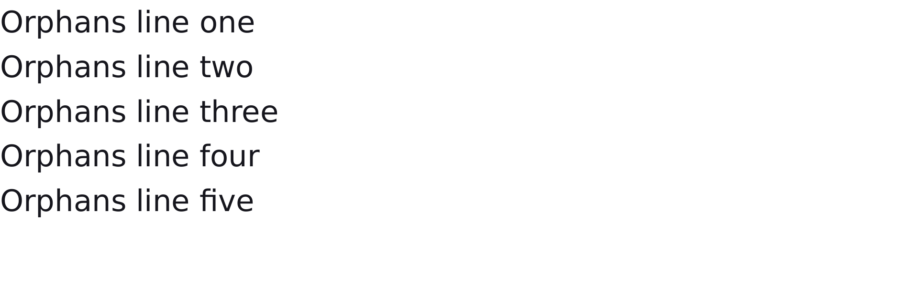
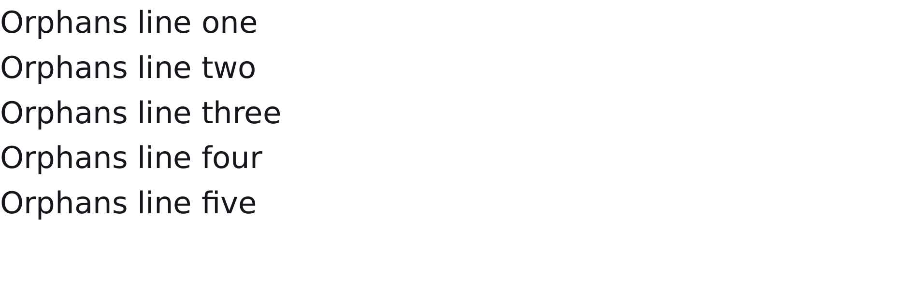
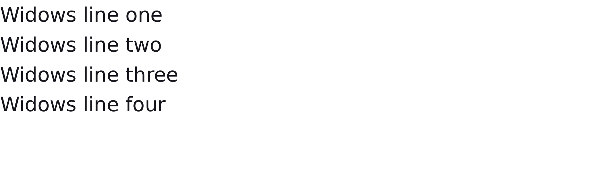
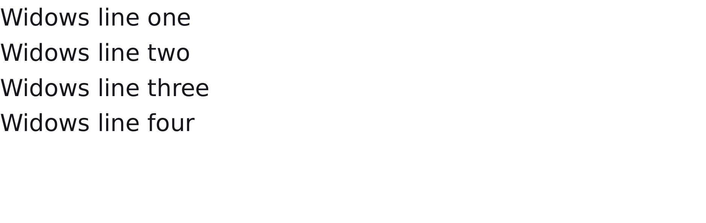
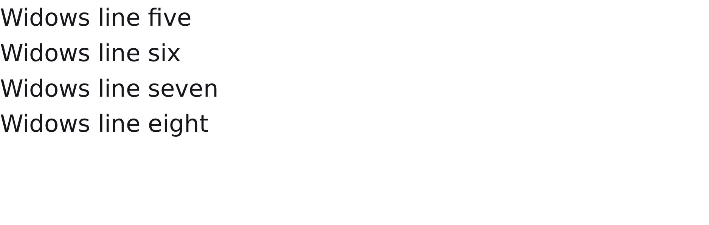

diff colours:MissingExtraColorErrGeomShiftAA edgeMatchAA / edge-jitter = cross-rasterizer measurement ceiling, not a bug.
why: content clipped/truncated (37.7% missing)
@left-middle and @right-middle page-margin boxes must paint in the side margin bands; catches renderers that only implement top and bottom margin boxes.
diff colours:MissingExtraColorErrGeomShiftAA edgeMatchAA / edge-jitter = cross-rasterizer measurement ceiling, not a bug.
why: content clipped/truncated (3.7% missing)
A block assigned page:chapter must use the chapter @page top-center margin box instead of the default one; catches engines that apply named-page geometry but collect only unqualified margin boxes.
FAIL100.00%paged-break-precedence-before-wins · break-before-over-break-after · REAL · oracle: weasyprint (Chrome/Paged.js unsupported)AaOnly
page 1
WeasyPrint refironpressclassed diff
page 2
WeasyPrint refironpressclassed diff
diff colours:MissingExtraColorErrGeomShiftAA edgeMatchAA / edge-jitter = cross-rasterizer measurement ceiling, not a bug.
why: differences confined to glyph AA edges — measurement ceiling, not a bug
At a shared class-A break point, break-before:right on the following block must win over break-after:left on the preceding block; catches paginators that emit independent breaks and suppress the later side request.
diff colours:MissingExtraColorErrGeomShiftAA edgeMatchAA / edge-jitter = cross-rasterizer measurement ceiling, not a bug.
why: fill recolour ΔRGB(+235,+31,+89) (ΔE 29.4)
A vertical flex container taller than one page should continue its child items on later pages; catches paginators that treat flex containers as unsplittable atoms.
diff colours:MissingExtraColorErrGeomShiftAA edgeMatchAA / edge-jitter = cross-rasterizer measurement ceiling, not a bug.
why: content clipped/truncated (19.0% missing)
string(section,last) and element(head,last) in page margin boxes must use the last heading on the page; catches GCPM implementations that ignore named strings or only support element(name)'s default selection.
diff colours:MissingExtraColorErrGeomShiftAA edgeMatchAA / edge-jitter = cross-rasterizer measurement ceiling, not a bug.
why: fill recolour ΔRGB(-11,-5,+0) (ΔE 2.8)
footnote-policy:line with footnote-display:inline keeps the owning line with its notes and lays the note bodies inline; catches footnote support that only extracts block notes with auto policy.
diff colours:MissingExtraColorErrGeomShiftAA edgeMatchAA / edge-jitter = cross-rasterizer measurement ceiling, not a bug.
why: content clipped/truncated (0.3% missing)
CSS GCPM float: footnote pulls a box into the page's footnote area with an auto-numbered call marker left in the body text. Validated against a WeasyPrint oracle because Chrome --print-to-pdf does not implement GCPM footnotes.
1<!DOCTYPE html>
2<html>
3<head>
4<meta charset="utf-8">
5<style>
6 /* CSS GCPM `float: footnote`: the floated element is pulled out of flow and
7 rendered in the page's footnote area at the bottom, with an automatically
8 numbered call/marker left in the body text. This fixture uses a WeasyPrint
9 oracle because Chrome --print-to-pdf does not implement GCPM footnotes. */
10 @page { size: 400px 300px; margin: 1cm; }
11 * { margin: 0; box-sizing: border-box; }
12 html { font-family: ParitySans; line-height: 1.5; background: #ffffff; color: #111111; }
13 p { font-size: 16px; }
14 .fn { float: footnote; color: #b00020; }
15</style>
16</head>
17<body>
18 <p>Body text with a reference.<span class="fn">This belongs in the footnote area.</span> More body text follows the call.</p>
19</body>
20</html>
diff colours:MissingExtraColorErrGeomShiftAA edgeMatchAA / edge-jitter = cross-rasterizer measurement ceiling, not a bug.
why: differences confined to glyph AA edges — measurement ceiling, not a bug
Modern break-after:page on the SECOND of three blocks forces the third block onto page 2 while the first two share page 1 — proving the modern break-after path fires mid-flow, not only on the first/last element. The multi-page harness asserts the page COUNT (2) and diffs both pages.
1<!DOCTYPE html>
2<html>
3<head>
4<meta charset="utf-8">
5<style>
6 /* Modern `break-after: page` on a MID-document block (the second of three).
7 The first two boxes fit together on page 1; the forced break AFTER the
8 second box pushes the third box onto page 2. This is a genuine two-page
9 document that proves the modern break-after path fires in the middle of the
10 flow (not only on the first/last element). The multi-page harness asserts
11 the page COUNT (2) and diffs both pages: page 1 = blue + green, page 2 =
12 orange. */
13 @page { size: 8.5in 11in; margin: 0; }
14 * { margin: 0; box-sizing: border-box; }
15 html { font-family: ParitySans; line-height: 1.5; background: #ffffff; }
16 .b1 { width: 420px; height: 200px; background: #2d6cdf; border: 4px solid #11305f; }
17 .b2 { break-after: page; width: 360px; height: 180px; background: #4caf50; border: 4px solid #1b5e20; }
18 .b3 { width: 300px; height: 160px; background: #e08a1e; border: 4px solid #7a4a0c; }
19</style>
20</head>
21<body>
22 <div class="b1"></div>
23 <div class="b2"></div>
24 <div class="b3"></div>
25</body>
26</html>
diff colours:MissingExtraColorErrGeomShiftAA edgeMatchAA / edge-jitter = cross-rasterizer measurement ceiling, not a bug.
why: differences confined to glyph AA edges — measurement ceiling, not a bug
Modern CSS Fragmentation break-after:page on the first block forces the following content onto page 2 — a genuine TWO-page document. The multi-page harness asserts the page COUNT (2) and diffs both pages.
diff colours:MissingExtraColorErrGeomShiftAA edgeMatchAA / edge-jitter = cross-rasterizer measurement ceiling, not a bug.
why: differences confined to glyph AA edges — measurement ceiling, not a bug
break-after:right after a full first page must insert a blank left page so the next real block starts on a right page; catches implementations that alias right to an ordinary page break.
diff colours:MissingExtraColorErrGeomShiftAA edgeMatchAA / edge-jitter = cross-rasterizer measurement ceiling, not a bug.
why: differences confined to glyph AA edges — measurement ceiling, not a bug
Modern CSS Fragmentation break-before:page (no legacy fallback) on the second block forces it onto page 2 — a genuine TWO-page document. The multi-page harness asserts the page COUNT (2) and diffs both pages (page 1 = blue box, page 2 = green box). Proves the modern break-* family is now parsed and wired into the forced-break path.
diff colours:MissingExtraColorErrGeomShiftAA edgeMatchAA / edge-jitter = cross-rasterizer measurement ceiling, not a bug.
why: differences confined to glyph AA edges — measurement ceiling, not a bug
Modern break-before:page on the first block is a no-op (no preceding content): the forced break is suppressed at the document start, so a single page renders. The modern break-* family is now parsed and wired into the forced-break path (see break-before-page-modern-real for the real two-page case).
diff colours:MissingExtraColorErrGeomShiftAA edgeMatchAA / edge-jitter = cross-rasterizer measurement ceiling, not a bug.
why: differences confined to glyph AA edges — measurement ceiling, not a bug
break-inside:avoid on a <figure> (image + caption) that would straddle a boundary: a 200px spacer leaves too little room, so Chrome keeps the figure together and pushes it WHOLE to page 2 (image and caption stay on the same page). The multi-page harness asserts the page COUNT (2) and diffs both pages.
diff colours:MissingExtraColorErrGeomShiftAA edgeMatchAA / edge-jitter = cross-rasterizer measurement ceiling, not a bug.
why: differences confined to glyph AA edges — measurement ceiling, not a bug
break-inside:avoid keeps a bordered card together across a page boundary: a tall spacer fills most of page 1, so the card would straddle the boundary and is pushed WHOLE onto page 2 (not split). The multi-page harness asserts the page COUNT (2): page 1 = spacer, page 2 = intact card.
1<!DOCTYPE html>
2<html>
3<head>
4<meta charset="utf-8">
5<style>
6 /* A tall spacer fills most of page 1, leaving too little room for the card.
7 `break-inside: avoid` keeps the bordered card together, so Chrome pushes the
8 WHOLE card onto page 2 (it is NOT split across the boundary). The multi-page
9 harness asserts the page COUNT (2): page 1 = spacer, page 2 = intact card. */
10 @page { size: 360px 300px; margin: 0; }
11 * { margin: 0; box-sizing: border-box; }
12 html { font-family: ParitySans; line-height: 1.5; background: #ffffff; }
13 .spacer { height: 220px; background: #e9ecef; border-bottom: 3px solid #868e96; }
14 .card {
15 break-inside: avoid;
16 width: 280px;
17 height: 160px;
18 background: #ffd166;
19 border: 6px solid #b8860b;
20 }
21 .card .bar {
22 height: 48px;
23 margin: 24px;
24 background: #ef476f;
25 border: 3px solid #7a1f33;
26 }
27</style>
28</head>
29<body>
30 <div class="spacer"></div>
31 <div class="card"><div class="bar"></div></div>
32</body>
33</html>
PASS0.00%paged-break-inside-avoid · avoidAaOnly
Chrome refironpressclassed diff
diff colours:MissingExtraColorErrGeomShiftAA edgeMatchAA / edge-jitter = cross-rasterizer measurement ceiling, not a bug.
why: differences confined to glyph AA edges — measurement ceiling, not a bug
Modern break-inside:avoid keeps a card intact on a single page. Content already fits, so the rendered result equals an unbroken nested box. The modern break-inside property is now parsed and honored (see break-inside-avoid-real for the cross-page case).
1<!DOCTYPE html>
2<html>
3<head>
4<meta charset="utf-8">
5<style>
6 /* A `column-span: all` heading inside a multi-column block that is taller than
7 the page: the spanning heading interrupts the columns, and the column flow
8 must resume AND fragment across the page boundary (CSS Multicol + CSS
9 Fragmentation). Chrome --print-to-pdf paginates the columns and re-lays the
10 spanning element per page; ironpress's multicol fragmentation does not yet
11 handle a column-span:all element combined with a page break, so the column
12 geometry across pages diverges from Chrome. Tracked-unsupported. */
13 @page { size: 400px 300px; margin: 0.8cm; }
14 * { margin: 0; box-sizing: border-box; }
15 html { font-family: ParitySans; line-height: 1.5; background: #ffffff; color: #111111; }
16 .cols { column-count: 2; column-gap: 16px; }
17 .cols p { font-size: 14px; margin: 0 0 8px; background: #eef3ff; padding: 4px; }
18 h2 { column-span: all; background: #11305f; color: #ffffff; font-size: 16px; padding: 4px; margin: 8px 0; }
19</style>
20</head>
21<body>
22 <div class="cols">
23 <p>Column body one alpha bravo charlie delta echo foxtrot golf hotel india.</p>
24 <p>Column body two juliet kilo lima mike november oscar papa quebec romeo.</p>
25 <h2>A spanning heading across both columns</h2>
26 <p>Column body three sierra tango uniform victor whiskey xray yankee zulu one.</p>
27 <p>Column body four alpha bravo charlie delta echo foxtrot golf hotel india two.</p>
28 <p>Column body five juliet kilo lima mike november oscar papa quebec romeo three.</p>
29 <p>Column body six sierra tango uniform victor whiskey xray yankee zulu four.</p>
30 </div>
31</body>
32</html>
CSS Paged Media 3 §3.4 named pages: page: wide on a .cover block forces a page break and the page it starts (page 2) adopts the @page wide margin (0.3cm) instead of the default @page margin (1cm). ironpress now implements named-page MARGINS; Chrome --print-to-pdf honors them too (verified: page 1 content at 1cm, page 2 at 0.3cm). The multi-page harness asserts the page COUNT (2) and diffs both pages: page 1 box at the 1cm default margin, page 2 cover at the 0.3cm wide margin.
CSS Paged Media 3 §3.4 named-page SIZE: @page big { size: A3 } selected by .big { page: big } makes page 2 physically A3-sized while page 1 keeps the default 400px by 300px size. The multi-page harness asserts the page COUNT (2) and the page 2 MediaBox dimensions.
diff colours:MissingExtraColorErrGeomShiftAA edgeMatchAA / edge-jitter = cross-rasterizer measurement ceiling, not a bug.
why: differences confined to glyph AA edges — measurement ceiling, not a bug
The page property names an @page rule (page: cover) on the document's FIRST block, with no matching @page cover rule. Named pages are now parsed (CSS Paged Media 3 §3.4): the property forces a page break before the box, but a forced break at the very start of the fragmentation flow is suppressed, so a single page renders with the section on the default page — matching Chrome. The named-page MARGIN application is covered by paged-named-page-margin.
source · cases/paged-media/paged-named-page.html
1<!DOCTYPE html>
2<html>
3<head>
4<meta charset="utf-8">
5<style>
6 @page { size: 376px 256px; margin: 0; }
7 html { font-family: ParitySans; line-height: 1.5; }
8 * { margin: 0; box-sizing: border-box; }
9 html, body { background: #ffffff; }
10 /* Named pages (page: <ident>) select a named @page rule. The engine does not
11 support named pages, and fixtures may not declare @page, so this only
12 applies the `page` property to a block; rendered output must match a plain
13 block on the default page. Tracks the named-pages gap. */
14 .section {
15 page: cover;
16 width: 320px;
17 height: 200px;
18 margin: 28px;
19 background: #ffb703;
20 border: 4px solid #fb8500;
21 }
22</style>
23</head>
24<body>
25 <div class="section"></div>
26</body>
27</html>
widows:3 requires at least three line boxes at the top of the next fragment after a break. The five-line paragraph fragments across two pages; the break moves earlier so the continuation starts with 3 lines, leaving 2 on page 1 (Chrome). The harness asserts the page COUNT (2) and diffs both pages.
1<!DOCTYPE html>
2<html>
3<head>
4<meta charset="utf-8">
5<style>
6 /* widows:3 — at least THREE line boxes must be placed at the TOP of the next
7 fragment after a break. The @page content box (162px) fits four 36px lines;
8 the paragraph has five, so it fragments across two pages. A greedy fill
9 would put 4 lines on page 1 and 1 on page 2, but widows:3 forces the break
10 to move EARLIER so the continuation starts with >=3 lines: Chrome puts 2
11 lines on page 1 and 3 on page 2. The harness asserts the page COUNT (2) and
12 diffs both pages. */
13 @page { size: 600px 162px; margin: 0; }
14 * { margin: 0; box-sizing: border-box; }
15 html, body { background: #ffffff; }
16 html { font-family: ParitySans; }
17 .para { font-size: 24px; line-height: 1.5; color: #16161d; widows: 3; }
18</style>
19</head>
20<body>
21 <p class="para">Widows line one<br>Widows line two<br>Widows line three<br>Widows line four<br>Widows line five</p>
22</body>
23</html>
A five-line paragraph taller than the @page content box (which fits four lines) is fragmented across two pages. With the initial orphans:2/widows:2, a naive greedy fill (4 lines on page 1, a single widow on page 2) is corrected so each fragment keeps >=2 lines: Chrome puts 3 lines on page 1 and 2 on page 2. The multi-page harness asserts the page COUNT (2) and diffs both pages — a real orphans/widows test, not a single-page no-op.
1<!DOCTYPE html>
2<html>
3<head>
4<meta charset="utf-8">
5<style>
6 /* A REAL orphans/widows test. The @page content box (162px tall) fits exactly
7 four 36px lines (font-size 24px * line-height 1.5), but the paragraph has
8 FIVE lines, so it is taller than one page and is fragmented across two. A
9 naive greedy fill would put 4 lines on page 1 and leave a single WIDOW on
10 page 2; the initial widows:2 (and orphans:2) forces a line down so each
11 fragment keeps >=2 lines. Chrome produces 3 lines on page 1 and 2 on page 2;
12 the multi-page harness asserts the page COUNT (2) and diffs both pages. */
13 @page { size: 600px 162px; margin: 0; }
14 * { margin: 0; box-sizing: border-box; }
15 html, body { background: #ffffff; }
16 html { font-family: ParitySans; }
17 .para { font-size: 24px; line-height: 1.5; color: #16161d; }
18</style>
19</head>
20<body>
21 <p class="para">Default line one<br>Default line two<br>Default line three<br>Default line four<br>Default line five</p>
22</body>
23</html>
orphans:3 requires at least three line boxes at the bottom of a fragment before a break. The five-line paragraph fragments across two pages; the break leaves 3 lines on page 1 and 2 on page 2 (Chrome). The harness asserts the page COUNT (2) and diffs both pages.
1<!DOCTYPE html>
2<html>
3<head>
4<meta charset="utf-8">
5<style>
6 /* orphans:3 — at least THREE line boxes must remain at the bottom of a
7 fragment before a break. The @page content box (162px) fits four 36px
8 lines; the paragraph has five, so it fragments across two pages. With
9 orphans:3 (and the default widows:2) the break must leave >=3 lines on
10 page 1 and >=2 on page 2: Chrome puts 3 lines on page 1 and 2 on page 2.
11 The harness asserts the page COUNT (2) and diffs both pages. */
12 @page { size: 600px 162px; margin: 0; }
13 * { margin: 0; box-sizing: border-box; }
14 html, body { background: #ffffff; }
15 html { font-family: ParitySans; }
16 .para { font-size: 24px; line-height: 1.5; color: #16161d; orphans: 3; }
17</style>
18</head>
19<body>
20 <p class="para">Orphans line one<br>Orphans line two<br>Orphans line three<br>Orphans line four<br>Orphans line five</p>
21</body>
22</html>
orphans:3/widows:3 on a paragraph whose lines all fit on one page have no visible effect; a single-page guard that the orphans/widows properties parse and never regress the no-break case (real cross-page fragmentation is covered by orphans-widows-default, orphans-3, widows-3, widows-4, orphans-4).
1<!DOCTYPE html>
2<html>
3<head>
4<meta charset="utf-8">
5<style>
6 @page { size: 8.5in 11in; margin: 0; }
7 html { font-family: ParitySans; line-height: 1.5; }
8 * { margin: 0; box-sizing: border-box; }
9 html, body { background: #ffffff; }
10 .frame {
11 width: 360px;
12 margin: 24px;
13 padding: 14px;
14 background: #e9ecef;
15 border: 2px solid #212529;
16 }
17 /* orphans/widows constrain line breaking across pages. With all lines on one
18 page they have no visible effect; this fixture tracks the orphans/widows
19 gap while keeping rendered text deterministic. */
20 .para {
21 orphans: 3;
22 widows: 3;
23 font-family: ParitySerif;
24 font-size: 18px;
25 line-height: 1.4;
26 color: #16161d;
27 }
28</style>
29</head>
30<body>
31 <div class="frame">
32 <div class="para">Orphans and widows<br>limit stray lines<br>at page boundaries.</div>
33 </div>
34</body>
35</html>
PASS0.00%orphans-4 · orphans-4AaOnly
page 1
Chrome refironpressclassed diff
page 2

Chrome ref

ironpressclassed diff
diff colours:MissingExtraColorErrGeomShiftAA edgeMatchAA / edge-jitter = cross-rasterizer measurement ceiling, not a bug.
why: differences confined to glyph AA edges — measurement ceiling, not a bug
orphans:4 requires at least four line boxes left at the bottom of a fragment. A 100px spacer leaves only three line-slots on page 1, so the five-line paragraph cannot satisfy orphans:4 there and is pushed WHOLE to page 2 (Chrome); the initial orphans:2 would instead split it. The multi-page harness asserts the page COUNT (2) and diffs both pages.
source · cases/paged-media/orphans-4.html
1<!DOCTYPE html>
2<html>
3<head>
4<meta charset="utf-8">
5<style>
6 /* orphans:4 requires at least four line boxes to be left at the BOTTOM of a
7 fragment before a break. A 100px spacer fills the top of page 1, leaving
8 only three 30px line-slots (90px) below it. The following five-line
9 paragraph therefore cannot place four lines on page 1, so orphans:4 forbids
10 a break there and the WHOLE paragraph is pushed to page 2 (Chrome). page 1
11 shows only the spacer; page 2 shows all five lines. With the initial
12 orphans:2 the paragraph would instead split (three lines under the spacer,
13 two on page 2), so this isolates the orphans constraint. The multi-page
14 harness asserts the page COUNT (2) and diffs both pages. */
15 @page { size: 600px 190px; margin: 0; }
16 * { margin: 0; box-sizing: border-box; }
17 html, body { background: #ffffff; }
18 html { font-family: ParitySans; }
19 .spacer { height: 100px; background: #cfe3d4; border-bottom: 3px solid #2e7d32; }
20 .para { font-size: 20px; line-height: 1.5; color: #16161d; orphans: 4; widows: 2; }
21</style>
22</head>
23<body>
24 <div class="spacer"></div>
25 <p class="para">Orphans line one<br>Orphans line two<br>Orphans line three<br>Orphans line four<br>Orphans line five</p>
26</body>
27</html>
PASS0.00%widows-4 · widows-4AaOnly
page 1

Chrome ref

ironpressclassed diff
page 2

Chrome refironpressclassed diff
diff colours:MissingExtraColorErrGeomShiftAA edgeMatchAA / edge-jitter = cross-rasterizer measurement ceiling, not a bug.
why: differences confined to glyph AA edges — measurement ceiling, not a bug
widows:4 forces at least four line boxes onto the continuation page. An eight-line paragraph in a six-line page would naively split 6/2, but widows:4 moves the break two lines earlier to 4/4 (Chrome). The multi-page harness asserts the page COUNT (2) and diffs both pages.
source · cases/paged-media/widows-4.html
1<!DOCTYPE html>
2<html>
3<head>
4<meta charset="utf-8">
5<style>
6 /* widows:4 requires at least four line boxes at the TOP of the continuation
7 fragment. The @page content box is 190px tall and fits six 30px lines
8 (font-size 20px * line-height 1.5); the paragraph has EIGHT lines, so it
9 fragments across two pages. A naive greedy fill would put six lines on
10 page 1 and leave only two on page 2 — but widows:4 forces the break two
11 lines earlier, so Chrome puts four lines on page 1 and four on page 2. The
12 multi-page harness asserts the page COUNT (2) and diffs both pages. */
13 @page { size: 600px 190px; margin: 0; }
14 * { margin: 0; box-sizing: border-box; }
15 html, body { background: #ffffff; }
16 html { font-family: ParitySans; }
17 .para { font-size: 20px; line-height: 1.5; color: #16161d; widows: 4; orphans: 2; }
18</style>
19</head>
20<body>
21 <p class="para">Widows line one<br>Widows line two<br>Widows line three<br>Widows line four<br>Widows line five<br>Widows line six<br>Widows line seven<br>Widows line eight</p>
22</body>
23</html>
diff colours:MissingExtraColorErrGeomShiftAA edgeMatchAA / edge-jitter = cross-rasterizer measurement ceiling, not a bug.
why: differences confined to glyph AA edges — measurement ceiling, not a bug
A background declared on @page paints the bleed area — the entire page box INCLUDING the @page margins (CSS Paged Media 3 §3.1). The 40px margin band is filled; a white bordered card sits inset in the content box.
diff colours:MissingExtraColorErrGeomShiftAA edgeMatchAA / edge-jitter = cross-rasterizer measurement ceiling, not a bug.
why: differences confined to glyph AA edges — measurement ceiling, not a bug
A propagated :root/canvas background is the document canvas, confined to the page content box — it does NOT paint the @page margin band (CSS Paged Media 3 §3.1). Same geometry as at-page-background-bleed, but the 40px margins stay white; the blue fills only inside them.
diff colours:MissingExtraColorErrGeomShiftAA edgeMatchAA / edge-jitter = cross-rasterizer measurement ceiling, not a bug.
why: differences confined to glyph AA edges — measurement ceiling, not a bug
page-break-after:always on the LAST in-flow block (nothing follows) must NOT emit a trailing blank page — Chrome renders one page, not two. The multi-page harness asserts the page COUNT (1) as well as page-1 content, which catches the trailing-blank-page bug the page-1-only comparison used to hide.
diff colours:MissingExtraColorErrGeomShiftAA edgeMatchAA / edge-jitter = cross-rasterizer measurement ceiling, not a bug.
why: differences confined to glyph AA edges — measurement ceiling, not a bug
Legacy page-break-before:always on the THIRD of three blocks moves it to page 2 while the first two share page 1 — proving the legacy forced break fires mid-flow. The multi-page harness asserts the page COUNT (2) and diffs both pages.
diff colours:MissingExtraColorErrGeomShiftAA edgeMatchAA / edge-jitter = cross-rasterizer measurement ceiling, not a bug.
why: differences confined to glyph AA edges — measurement ceiling, not a bug
page-break-before:always puts the second box on page 2, so the document is genuinely TWO pages. The multi-page harness asserts the page COUNT (2) and diffs BOTH pages against Chrome (page 1 = blue box, page 2 = green box) — a real pagination test, not a single-page no-op.
diff colours:MissingExtraColorErrGeomShiftAA edgeMatchAA / edge-jitter = cross-rasterizer measurement ceiling, not a bug.
why: differences confined to glyph AA edges — measurement ceiling, not a bug
Legacy page-break-inside:avoid on a TABLE that would straddle a page boundary: a 150px spacer leaves too little room for the 160px table. Chrome keeps the table whole and pushes it to page 2; ironpress now honors table-level keep-together too (the avoid-inside table fits a full page, so the whole row run is moved to page 2 instead of split between rows, matching the block-level keep-together in break-inside-avoid-real). The multi-page harness asserts the page COUNT (2) and diffs both pages.
diff colours:MissingExtraColorErrGeomShiftAA edgeMatchAA / edge-jitter = cross-rasterizer measurement ceiling, not a bug.
why: content clipped/truncated (0.0% missing)
page-break-inside:avoid on a table that already fits keeps the whole table on one page. Tracks the legacy page-break-inside gap with a geometry-deterministic table.
diff colours:MissingExtraColorErrGeomShiftAA edgeMatchAA / edge-jitter = cross-rasterizer measurement ceiling, not a bug.
why: differences confined to glyph AA edges — measurement ceiling, not a bug
Legacy page-break-inside:avoid on a bordered CARD that would straddle a boundary: a 220px spacer leaves too little room, so Chrome (and ironpress) push the whole card to page 2. Confirms the legacy alias is honored for block containers. The multi-page harness asserts the page COUNT (2) and diffs both pages.
diff colours:MissingExtraColorErrGeomShiftAA edgeMatchAA / edge-jitter = cross-rasterizer measurement ceiling, not a bug.
why: differences confined to glyph AA edges — measurement ceiling, not a bug
content: counter(page) used in NORMAL DOCUMENT FLOW (.pagenum::after) is an ordinary undefined counter that resolves to 0 in both Chrome and ironpress (the page/pages counters are special only inside @page margin boxes, which ironpress now supports — see the render_at_page_margin_box_counters_three_pages PDF-text test). This fixture locks in the in-flow 0-resolution parity with Chrome.
diff colours:MissingExtraColorErrGeomShiftAA edgeMatchAA / edge-jitter = cross-rasterizer measurement ceiling, not a bug.
why: differences confined to glyph AA edges — measurement ceiling, not a bug
Page margin exercised through an explicit 40px body margin (fixtures may not use @page); a filled, bordered content box is inset uniformly inside the single Letter page.
diff colours:MissingExtraColorErrGeomShiftAA edgeMatchAA / edge-jitter = cross-rasterizer measurement ceiling, not a bug.
why: differences confined to glyph AA edges — measurement ceiling, not a bug
@page :blank must style the blank page inserted by a sided break; catches implementations that insert the parity page but leave it with the default page rule.
CSS Paged Media 3 §3.3: @page :first sets a larger top margin on page 1 only; page 2 uses the default @page margin. Catches the bug where :first folded into the document-global margin and was wrongly applied to EVERY page (page 2 would sit at the 4cm margin too). The harness asserts the page COUNT (2) and diffs both pages — page 1 box at 4cm, page 2 box at 1cm.
1<!DOCTYPE html>
2<html>
3<head>
4<meta charset="utf-8">
5<style>
6 /* CSS Paged Media 3 §3.3: `@page :first` overrides the FIRST page only. Here
7 page 1 gets a larger top margin (a common letterhead/title-page pattern)
8 while page 2 uses the default @page margin. This directly catches the bug
9 where `:first` folded into the document-global margin and was wrongly
10 applied to every page (page 2 would then sit at the 4cm margin too). Only
11 the TOP margin differs, so the content width is identical on both pages. */
12 @page { size: 8.5in 11in; margin: 1cm; }
13 @page :first { margin-top: 4cm; }
14 * { margin: 0; box-sizing: border-box; }
15 html { font-family: ParitySans; line-height: 1.5; background: #ffffff; }
16 .p1 { width: 420px; height: 220px; background: #2d6cdf; border: 4px solid #11305f; }
17 .p2 { page-break-before: always; width: 420px; height: 220px; background: #4caf50; border: 4px solid #1b5e20; }
18</style>
19</head>
20<body>
21 <div class="p1"></div>
22 <div class="p2"></div>
23</body>
24</html>
CSS Paged Media 3 §3.2 :left/:right spread margins (right page wide left margin, left page wide right margin). Chrome honors the spread pseudo-classes; ironpress now differentiates per spread too, tagging pages by parity (LTR page 1 = right) so each spread's content box shifts toward the gutter: page 1 (right) sits 3cm from the left, page 2 (left) sits at the 1cm left edge. The multi-page harness asserts the page COUNT (2) and diffs both pages.
1<!DOCTYPE html>
2<html>
3<head>
4<meta charset="utf-8">
5<style>
6 /* CSS Paged Media 3 §3.2: the :left / :right spread pseudo-classes give each
7 side of a spread its own (gutter) margin. In LTR the first page is :right,
8 the second is :left. Here the right page gets a wide LEFT margin and the
9 left page gets a wide RIGHT margin, so the same-size box is inset toward the
10 gutter on each spread: page 1 (right) sits 3cm from the left, page 2 (left)
11 sits at the 1cm left edge. The multi-page harness asserts the page COUNT (2)
12 and diffs both pages, catching a missing spread-selector implementation. */
13 @page { size: 8.5in 11in; margin: 1cm; }
14 @page :right { margin-left: 3cm; }
15 @page :left { margin-right: 3cm; }
16 * { margin: 0; box-sizing: border-box; }
17 html { font-family: ParitySans; line-height: 1.5; background: #ffffff; }
18 .p1 { width: 360px; height: 200px; background: #2d6cdf; border: 4px solid #11305f; }
19 .p2 { page-break-before: always; width: 360px; height: 200px; background: #4caf50; border: 4px solid #1b5e20; }
20</style>
21</head>
22<body>
23 <div class="p1"></div>
24 <div class="p2"></div>
25</body>
26</html>
CSS GCPM running elements: position: running(h) removes a box from normal flow, stores it in a named slot, and @top-center { content: element(h) } renders it as a running header in the page margin box. Validated against a WeasyPrint oracle because Chrome --print-to-pdf does not implement GCPM running elements.
1<!DOCTYPE html>
2<html>
3<head>
4<meta charset="utf-8">
5<style>
6 /* CSS GCPM running elements: `position: running(name)` removes a box from the
7 normal flow and parks it in a named slot; `@top-center { content:
8 element(name) }` then renders it as a running header in the page margin box.
9 This GCPM behavior is validated against WeasyPrint because Chrome
10 --print-to-pdf does not implement running elements. */
11 @page {
12 size: 400px 300px;
13 margin: 1.2cm;
14 @top-center { content: element(runhead); }
15 }
16 * { margin: 0; box-sizing: border-box; }
17 html { font-family: ParitySans; line-height: 1.5; background: #ffffff; color: #111111; }
18 h1 { position: running(runhead); font-size: 18px; color: #11305f; }
19 p { font-size: 16px; }
20</style>
21</head>
22<body>
23 <h1>Chapter Title</h1>
24 <p>Body paragraph one of the chapter.</p>
25 <p>Body paragraph two of the chapter.</p>
26</body>
27</html>
A paginated table must repeat the thead and tfoot bands on each page fragment; integer-raster page geometry catches table splitting that fragments rows but forgets header/footer group repetition.